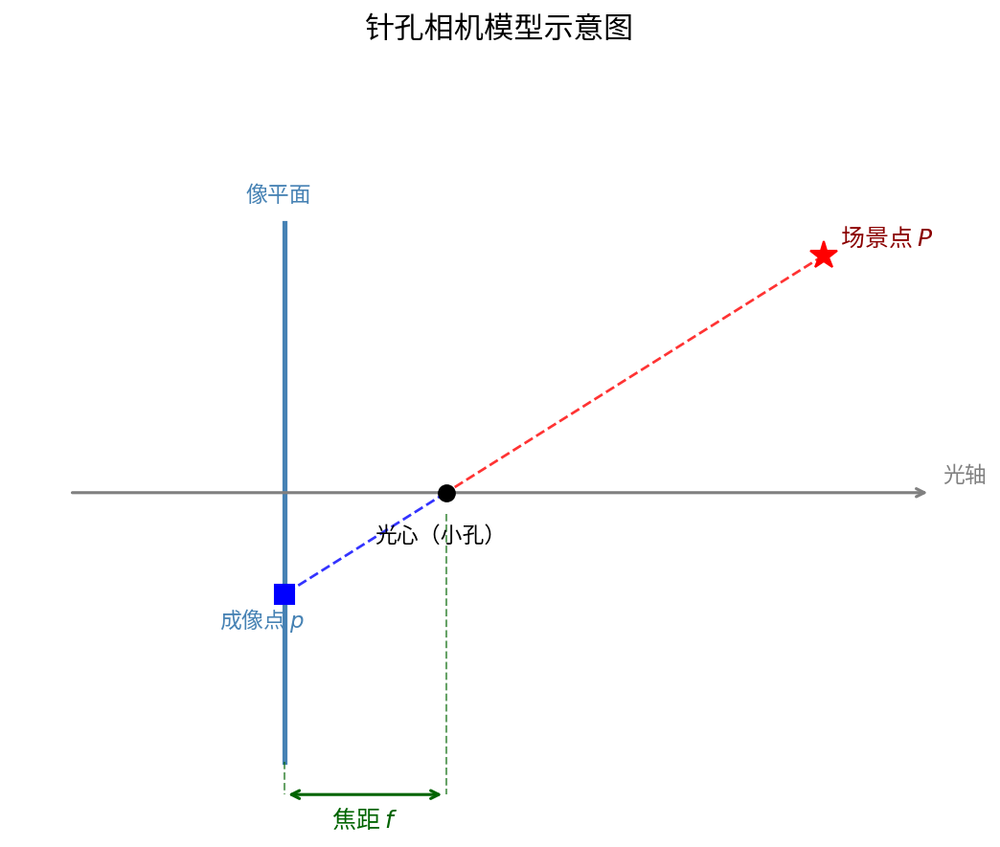
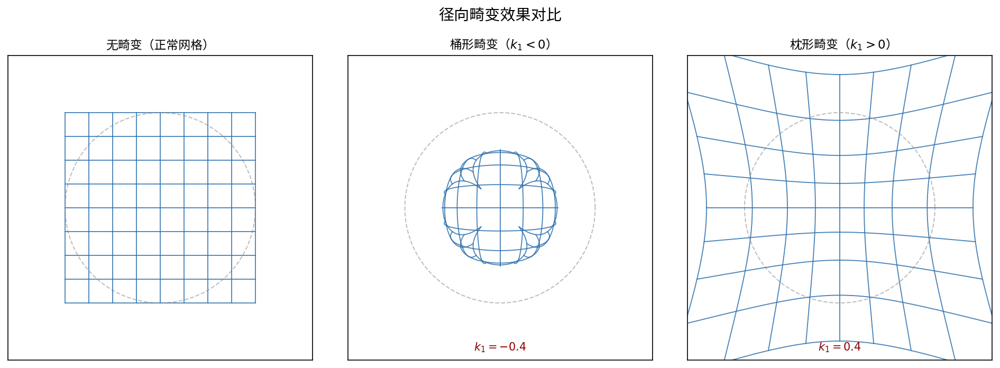
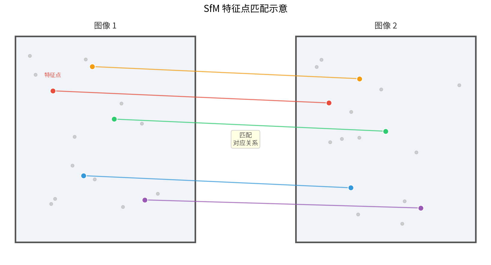

第二章：视觉基础——相机、投影与点云
2.1 针孔相机模型
基本原理
针孔相机（Pinhole Camera）是计算机视觉中最基础的相机模型。其核心思想来自光学中的小孔成像原理：三维空间中的一个点，通过一个极小的孔（光心），在对面的成像平面上形成一个像点。

图 2-1：针孔相机模型示意。三维点 P 经光心 O 投影到像平面上得到像点 p。相似三角形推导
设三维空间点 $P = (X, Y, Z)^T$（以相机光心为原点，$Z$ 轴为主光轴方向），焦距为 $f$（光心到像平面的距离）。
由相似三角形关系，像点坐标 $(x, y)$（单位：长度，例如毫米）满足：
$$\frac{x}{f} = \frac{X}{Z}, \quad \frac{y}{f} = \frac{Y}{Z}$$
因此：
$$x = f \cdot \frac{X}{Z}, \quad y = f \cdot \frac{Y}{Z}$$
从物理坐标到像素坐标
实际传感器的像素并不是等尺寸的，且图像坐标原点通常在左上角而非像平面中心。需要引入如下参数进行转换：
- $f_x = f / d_x$：$X$ 方向的等效焦距（单位：像素），$d_x$ 为每个像素在 $X$ 方向的物理尺寸（mm/pixel）
- $f_y = f / d_y$：$Y$ 方向的等效焦距（单位：像素）
- $(c_x, c_y)$：主点（Principal Point），即光轴与像平面的交点在像素坐标系中的位置
像素坐标 $(u, v)$ 的推导：
$$u = f_x \cdot \frac{X}{Z} + c_x$$
$$v = f_y \cdot \frac{Y}{Z} + c_y$$
展开步骤：
$$\begin{aligned} u &= \frac{f}{d_x} \cdot \frac{X}{Z} + c_x = f_x \cdot \frac{X}{Z} + c_x \\ v &= \frac{f}{d_y} \cdot \frac{Y}{Z} + c_y = f_y \cdot \frac{Y}{Z} + c_y \end{aligned}$$
内参矩阵 $K$
将上述关系写成矩阵形式（暂时忽略齐次坐标，后面 2.3 节会补全），内参矩阵 $K$ 定义为：
$$K = \begin{pmatrix} f_x & s & c_x \\ 0 & f_y & c_y \\ 0 & 0 & 1 \end{pmatrix}$$
其中 $s$ 为倾斜因子（Skew Factor），用于描述像素轴不垂直的情况。现代相机中 $s \approx 0$，通常忽略。
因此简化后的标准内参矩阵为：
$$K = \begin{pmatrix} f_x & 0 & c_x \\ 0 & f_y & c_y \\ 0 & 0 & 1 \end{pmatrix}$$
典型数值举例（某手机相机）： - 图像分辨率：$3840 \times 2160$（4K） - $f_x \approx 3500$ 像素，$f_y \approx 3500$ 像素 - $c_x \approx 1920$，$c_y \approx 1080$
思考题 2.1 1. 若相机传感器像素尺寸在 $X$、$Y$ 方向均为 $0.004$ mm，物理焦距 $f = 20$ mm，试计算 $f_x$ 和 $f_y$。 2. 主点 $(c_x, c_y)$ 是否一定等于图像中心 $(\text{width}/2, \text{height}/2)$？说明原因。 3. 若图像沿 $X$ 方向缩放了 2 倍，$K$ 矩阵中哪些参数会改变？
2.2 相机外参与世界坐标系
四个坐标系
在三维视觉中，我们需要区分以下四个坐标系：
| 坐标系 | 符号 | 说明 |
|---|---|---|
| 世界坐标系 | $\mathbf{X}_w = (X_w, Y_w, Z_w)^T$ | 场景的绝对参考系，单位通常为米 |
| 相机坐标系 | $\mathbf{X}_c = (X_c, Y_c, Z_c)^T$ | 以相机光心为原点，$Z_c$ 朝前 |
| 图像坐标系 | $\mathbf{x} = (x, y)^T$ | 以主点为原点，单位为长度（毫米） |
| 像素坐标系 | $\mathbf{p} = (u, v)^T$ | 以左上角为原点，单位为像素 |
 图 2-2：四个坐标系及其变换链。世界坐标系 → 相机坐标系 → 图像坐标系 → 像素坐标系。
图 2-2：四个坐标系及其变换链。世界坐标系 → 相机坐标系 → 图像坐标系 → 像素坐标系。
旋转矩阵 $R$ 与平移向量 $t$
相机外参（Extrinsic Parameters）描述相机在世界坐标系中的位姿，由旋转矩阵 $R \in SO(3)$ 和平移向量 $t \in \mathbb{R}^3$ 组成。
世界坐标系到相机坐标系的变换为：
$$\mathbf{X}_c = R \mathbf{X}_w + t$$
展开：
$$\begin{pmatrix} X_c \\ Y_c \\ Z_c \end{pmatrix} = \begin{pmatrix} r_{11} & r_{12} & r_{13} \\ r_{21} & r_{22} & r_{23} \\ r_{31} & r_{32} & r_{33} \end{pmatrix} \begin{pmatrix} X_w \\ Y_w \\ Z_w \end{pmatrix} + \begin{pmatrix} t_1 \\ t_2 \\ t_3 \end{pmatrix}$$
注意事项：
- $R$ 是正交矩阵，满足 $R^T R = I$，$\det(R) = 1$
- $t$ 不是相机在世界坐标系中的位置！相机中心在世界坐标系中的位置为 $C_w = -R^T t$
- 外参描述的是"如何把世界坐标变换到相机坐标"，是相机位姿的逆
完整变换链
$$\mathbf{X}_w \xrightarrow{[R|t]} \mathbf{X}_c \xrightarrow{K} \tilde{\mathbf{p}}$$
具体步骤：
步骤1：世界坐标 → 相机坐标
$$\begin{pmatrix} X_c \\ Y_c \\ Z_c \end{pmatrix} = R \begin{pmatrix} X_w \\ Y_w \\ Z_w \end{pmatrix} + t$$
步骤2：相机坐标 → 图像坐标（透视除法）
$$x = f \cdot \frac{X_c}{Z_c}, \quad y = f \cdot \frac{Y_c}{Z_c}$$
步骤3：图像坐标 → 像素坐标
$$u = f_x \cdot x / f + c_x = f_x \cdot \frac{X_c}{Z_c} + c_x$$
$$v = f_y \cdot y / f + c_y = f_y \cdot \frac{Y_c}{Z_c} + c_y$$
思考题 2.2 1. 若相机绕其自身 $Z$ 轴旋转 $90°$，旋转矩阵 $R$ 是什么？对应的 $t$ 会改变吗？ 2. 已知相机外参 $R, t$，如何求相机光心在世界坐标系中的位置？ 3. 两台相机拍摄同一场景，它们各自的外参 $(R_1, t_1)$ 和 $(R_2, t_2)$ 之间是什么关系？
2.3 齐次坐标与投影矩阵
为什么引入齐次坐标
在欧氏坐标中，透视投影涉及除以 $Z_c$（透视除法），这是一个非线性操作，无法用矩阵乘法表示。齐次坐标通过增加一个额外维度，将非线性的透视变换转化为线性矩阵运算，从而使整个投影过程可以用一次矩阵乘法完成。
齐次坐标的定义：
- 二维点 $(u, v)$ 的齐次坐标：$\tilde{\mathbf{p}} = (u, v, 1)^T$ 或等价地 $(\lambda u, \lambda v, \lambda)^T$，$\lambda \neq 0$
- 三维点 $(X, Y, Z)$ 的齐次坐标：$\tilde{\mathbf{X}} = (X, Y, Z, 1)^T$
从齐次坐标恢复欧氏坐标（归一化，即除以最后一个分量）：
$$(\lambda u, \lambda v, \lambda)^T \rightarrow (u, v)^T$$
齐次坐标下的投影
在齐次坐标下，像素坐标 $\tilde{\mathbf{p}}$ 与相机坐标 $\tilde{\mathbf{X}}_c$ 的关系为：
$$\lambda \begin{pmatrix} u \\ v \\ 1 \end{pmatrix} = \begin{pmatrix} f_x & 0 & c_x \\ 0 & f_y & c_y \\ 0 & 0 & 1 \end{pmatrix} \begin{pmatrix} X_c \\ Y_c \\ Z_c \end{pmatrix}$$
即：
$$\lambda \tilde{\mathbf{p}} = K \mathbf{X}_c$$
其中 $\lambda = Z_c$（深度值），归一化后即得到真实像素坐标。
完整的 $3 \times 4$ 投影矩阵
将外参变换写成齐次坐标形式：
$$\mathbf{X}_c = R \mathbf{X}_w + t = [R | t] \tilde{\mathbf{X}}_w$$
其中 $[R|t]$ 是 $3 \times 4$ 矩阵：
$$[R|t] = \begin{pmatrix} r_{11} & r_{12} & r_{13} & t_1 \\ r_{21} & r_{22} & r_{23} & t_2 \\ r_{31} & r_{32} & r_{33} & t_3 \end{pmatrix}$$
将内参和外参合并，得到完整的 $3 \times 4$ 投影矩阵 $P$：
$$\boxed{P = K [R | t]}$$
展开为：
$$P = \begin{pmatrix} f_x & 0 & c_x \\ 0 & f_y & c_y \\ 0 & 0 & 1 \end{pmatrix} \begin{pmatrix} r_{11} & r_{12} & r_{13} & t_1 \\ r_{21} & r_{22} & r_{23} & t_2 \\ r_{31} & r_{32} & r_{33} & t_3 \end{pmatrix}$$
因此，完整的投影过程为：
$$\lambda \begin{pmatrix} u \\ v \\ 1 \end{pmatrix} = P \begin{pmatrix} X_w \\ Y_w \\ Z_w \\ 1 \end{pmatrix} = K[R|t] \begin{pmatrix} X_w \\ Y_w \\ Z_w \\ 1 \end{pmatrix}$$
逐步推导验证：
$$\lambda \begin{pmatrix} u \\ v \\ 1 \end{pmatrix} = K (R \mathbf{X}_w + t) = K \begin{pmatrix} X_c \\ Y_c \\ Z_c \end{pmatrix} = \begin{pmatrix} f_x X_c + c_x Z_c \\ f_y Y_c + c_y Z_c \\ Z_c \end{pmatrix}$$
归一化后（除以 $\lambda = Z_c$）：
$$u = \frac{f_x X_c}{Z_c} + c_x, \quad v = \frac{f_y Y_c}{Z_c} + c_y$$
与 2.1 节结论一致。
投影矩阵的自由度：
- $K$：5 个自由度（$f_x, f_y, c_x, c_y, s$，通常 $s=0$ 故为 4 个）
- $R$：3 个自由度（旋转的 3 个参数，如欧拉角）
- $t$：3 个自由度
- $P$：共 11 个独立自由度（$3\times4=12$ 个元素减去 1 个尺度因子）
思考题 2.3 1. 已知投影矩阵 $P$，如何从 $P$ 中分解出 $K$、$R$、$t$？（提示：考虑 RQ 分解） 2. 为什么投影矩阵 $P$ 只有 11 个独立自由度，而不是 12 个？ 3. 若两张图像对应的投影矩阵分别为 $P_1$ 和 $P_2$，如何利用对极几何约束寻找对应点？
2.4 畸变模型
为什么存在畸变
理想针孔相机假设光线严格经过一个点（光心），但真实镜头由多个透镜组成，镜片制造误差和光线折射会导致成像偏离理想针孔模型，产生畸变（Distortion）。

图 2-4：畸变效果对比。左：无畸变；中：桶形畸变（$k_1 < 0$）；右：枕形畸变（$k_1 > 0$）。径向畸变
径向畸变（Radial Distortion）是最主要的畸变类型，表现为图像沿径向（从图像中心向外）发生伸缩。
设归一化图像坐标（即相机坐标系下归一化到 $Z=1$ 平面）为 $(x_n, y_n)$：
$$x_n = \frac{X_c}{Z_c}, \quad y_n = \frac{Y_c}{Z_c}$$
径向距离：
$$r^2 = x_n^2 + y_n^2$$
加入径向畸变后的坐标 $(x_d, y_d)$：
$$x_d = x_n (1 + k_1 r^2 + k_2 r^4 + k_3 r^6)$$
$$y_d = y_n (1 + k_1 r^2 + k_2 r^4 + k_3 r^6)$$
其中： - $k_1, k_2, k_3$ 为径向畸变系数 - $k_1 < 0$：桶形畸变（Barrel Distortion），图像向外膨胀 - $k_1 > 0$：枕形畸变（Pincushion Distortion），图像向内收缩 - 对于大多数相机，前两项 $k_1, k_2$ 已足够精确
切向畸变
切向畸变（Tangential Distortion）由镜头平面与传感器平面不完全平行引起：
$$x_d = x_n + [2p_1 x_n y_n + p_2(r^2 + 2x_n^2)]$$
$$y_d = y_n + [p_1(r^2 + 2y_n^2) + 2p_2 x_n y_n]$$
其中 $p_1, p_2$ 为切向畸变系数。
完整畸变模型
将径向畸变和切向畸变合并：
$$\begin{aligned} x_d &= x_n(1 + k_1 r^2 + k_2 r^4 + k_3 r^6) + 2p_1 x_n y_n + p_2(r^2 + 2x_n^2) \\ y_d &= y_n(1 + k_1 r^2 + k_2 r^4 + k_3 r^6) + p_1(r^2 + 2y_n^2) + 2p_2 x_n y_n \end{aligned}$$
最终像素坐标：
$$u = f_x \cdot x_d + c_x, \quad v = f_y \cdot y_d + c_y$$
去畸变流程
去畸变（Undistortion）是指将含畸变的图像还原为理想针孔相机所拍摄的图像。
流程如下：
``` 输入：含畸变像素坐标 (u, v)，相机参数 K, {k1,k2,p1,p2} ↓ 1. 转换为归一化坐标：x_n = (u - cx) / fx, y_n = (v - cy) / fy ↓ 2. 迭代求解无畸变归一化坐标（因畸变方程是正向的，逆变换需迭代） 初始值：x0 = x_n, y0 = y_n 迭代：x_{i+1} = (x_n - Δx) / (1 + k1*r^2 + k2*r^4)，重复直到收敛 ↓ 3. 代入内参得无畸变像素坐标：u' = fx * x0 + cx, v' = fy * y0 + cy 输出：无畸变像素坐标 (u', v') ```
OpenCV 中的去畸变：
```python import cv2 import numpy as np # 相机内参和畸变系数 K = np.array([[fx, 0, cx], [0, fy, cy], [0, 0, 1]], dtype=np.float64) dist_coeffs = np.array([k1, k2, p1, p2, k3]) # 去畸变 img_undistorted = cv2.undistort(img, K, dist_coeffs) # 或者使用 remap（效率更高） h, w = img.shape[:2] mapx, mapy = cv2.initUndistortRectifyMap(K, dist_coeffs, None, K, (w, h), cv2.CV_32FC1) img_undistorted = cv2.remap(img, mapx, mapy, cv2.INTER_LINEAR) ```
思考题 2.4 1. 广角镜头（鱼眼镜头）的 $k_1$ 通常是正值还是负值？为什么？ 2. 为什么去畸变需要迭代求解，而加畸变是直接计算？ 3. 在实际的 3DGS 管线中，去畸变通常在 COLMAP 的哪个阶段完成？
2.5 点云是什么
SfM 的直觉
运动恢复结构（Structure from Motion, SfM）是从多张二维图像中同时恢复相机位姿和场景三维结构的技术。

图 2-5：SfM 的核心思想。左右两张图像中的特征点被匹配后，通过三角化恢复三维坐标。SfM 的核心步骤：
- 特征提取：在每张图像中检测关键点（如 SIFT、SuperPoint），并提取描述子
- 特征匹配：在图像对之间寻找描述子相似的关键点对
- 几何验证：用基础矩阵 $F$ 或本质矩阵 $E$ 过滤错误匹配（外点剔除）
- 相机位姿估计：从匹配中恢复相对位姿（Essential Matrix 分解）
- 三角化：利用已知相机位姿，将对应点对三角化为三维点
- Bundle Adjustment：联合优化所有相机位姿和三维点坐标，最小化重投影误差
三角化的数学原理：
设两台相机的投影矩阵为 $P_1, P_2$，对应像素坐标为 $\mathbf{p}_1 = (u_1, v_1)^T$，$\mathbf{p}_2 = (u_2, v_2)^T$，三维点为 $\mathbf{X} = (X, Y, Z, 1)^T$。
由投影关系：
$$\lambda_1 \tilde{\mathbf{p}}_1 = P_1 \mathbf{X}, \quad \lambda_2 \tilde{\mathbf{p}}_2 = P_2 \mathbf{X}$$
交叉乘（消去 $\lambda$），每个方程贡献 2 个约束，合计 4 个方程，解出 3 个未知数 $(X, Y, Z)$。以最小二乘法求解：
$$A \mathbf{X} = 0, \quad A = \begin{pmatrix} u_1 p_{3,1}^T - p_{1,1}^T \\ v_1 p_{3,1}^T - p_{2,1}^T \\ u_2 p_{3,2}^T - p_{1,2}^T \\ v_2 p_{3,2}^T - p_{2,2}^T \end{pmatrix}$$
其中 $p_{i,j}^T$ 表示 $P_j$ 的第 $i$ 行。用 SVD 分解取最小奇异值对应的向量即为解。
重投影误差（Reprojection Error）：
$$e = \sum_{i,j} \| \mathbf{p}_{ij} - \pi(P_i, \mathbf{X}_j) \|^2$$
其中 $\pi$ 表示投影函数，Bundle Adjustment 通过非线性优化（Levenberg-Marquardt 算法）最小化该误差。
稀疏点云 vs 密集点云
| 特性 | 稀疏点云 | 密集点云 |
|---|---|---|
| 点的数量 | 千~万级别 | 百万~亿级别 |
| 来源 | SfM 特征点三角化 | MVS（多视图立体）、激光雷达、RGBD |
| 包含信息 | 相机位姿、三维坐标 | 几何表面、法向量、颜色 |
| 用途 | 相机标定、位姿估计 | 三维重建、渲染 |
| 代表算法 | COLMAP（SfM 部分）、OpenSfM | COLMAP（MVS 部分）、OpenMVS |
| 3DGS 中的角色 | 初始化高斯球的位置 | 可选，提升初始化质量 |
对于 3D Gaussian Splatting，SfM 生成的稀疏点云用于： - 确定每个相机的位姿（$R_i, t_i$） - 为每个三维高斯球提供初始位置和颜色
思考题 2.5 1. 为什么用 2 张图像无法唯一确定一个三维点的深度？最少需要几张视角不同的图像？ 2. Bundle Adjustment 同时优化相机位姿和三维点，为什么不能分步骤分别优化？ 3. 稀疏点云在 3DGS 中仅用于初始化。若初始点云质量很差（点数少、噪声大），会对最终渲染结果有何影响？
2.6 COLMAP 实战
什么是 COLMAP
COLMAP 是目前最流行的开源 SfM + MVS 管线，由 Johannes Schönberger 等人开发。它集成了特征提取、特征匹配、SfM 重建、MVS 稠密重建等完整功能，是 3DGS 等三维重建任务的标准前处理工具。
 图 2-6：COLMAP 重建结果示例。蓝色点为稀疏点云，红色视锥为各相机的位姿估计。
图 2-6：COLMAP 重建结果示例。蓝色点为稀疏点云，红色视锥为各相机的位姿估计。
安装
方法一：conda（推荐）
```bash conda install -c conda-forge colmap ```
方法二：apt（Ubuntu 20.04+）
```bash sudo apt-get install colmap ```
方法三：从源码编译（获取最新特性）
```bash # 安装依赖 sudo apt-get install -y \ git cmake build-essential libboost-all-dev libeigen3-dev \ libflann-dev libfreeimage-dev libmetis-dev \ libgoogle-glog-dev libgflags-dev libsqlite3-dev \ libglew-dev qtbase5-dev libqt5opengl5-dev # 克隆并编译 git clone https://github.com/colmap/colmap.git cd colmap && mkdir build && cd build cmake .. -DCMAKE_BUILD_TYPE=Release make -j$(nproc) sudo make install ```
验证安装：
```bash colmap -h colmap --version ```
自动重建流程
COLMAP 提供 `automatic_reconstructor` 命令，一键完成从图像到稀疏点云的完整流程：
```bash # 假设图像存放在 /data/scene/images/ 目录下 DATASET_PATH=/data/scene colmap automatic_reconstructor \ --workspace_path $DATASET_PATH \ --image_path $DATASET_PATH/images \ --quality medium \ --single_camera 1 ```
参数说明： - `--quality`：重建质量，可选 `low / medium / high / extreme`（影响特征点数量和匹配策略） - `--single_camera 1`：所有图像使用同一相机模型（适用于单相机多角度拍摄） - `--camera_model`：指定相机模型，默认 `SIMPLE_RADIAL`，可改为 `OPENCV`（支持完整畸变参数）
分步骤执行（更灵活，适合调试）：
```bash # Step 1: 特征提取 colmap feature_extractor \ --database_path $DATASET_PATH/database.db \ --image_path $DATASET_PATH/images \ --ImageReader.camera_model OPENCV \ --ImageReader.single_camera 1 # Step 2: 特征匹配（顺序匹配，适合视频序列） colmap sequential_matcher \ --database_path $DATASET_PATH/database.db # 或：穷举匹配（适合无序图像集合） colmap exhaustive_matcher \ --database_path $DATASET_PATH/database.db # Step 3: SfM 重建 mkdir -p $DATASET_PATH/sparse colmap mapper \ --database_path $DATASET_PATH/database.db \ --image_path $DATASET_PATH/images \ --output_path $DATASET_PATH/sparse # Step 4（可选）：将二进制输出转为文本格式 colmap model_converter \ --input_path $DATASET_PATH/sparse/0 \ --output_path $DATASET_PATH/sparse/0 \ --output_type TXT ```
输出文件结构
成功重建后，COLMAP 的输出目录结构如下：
``` $DATASET_PATH/ ├── database.db # SQLite 数据库（特征、匹配结果） ├── images/ # 原始输入图像 └── sparse/ └── 0/ # 第 0 个重建结果（若场景不连通可能有多个） ├── cameras.bin # 相机内参（或 cameras.txt） ├── images.bin # 每张图像的位姿（外参） ├── points3D.bin # 三维点坐标、颜色、观测信息 └── project.ini # 项目配置文件 ```
文件内容说明：
`cameras.txt` 格式示例（OPENCV 模型）：
``` # Camera list with one line of data per camera: # CAMERA_ID, MODEL, WIDTH, HEIGHT, PARAMS[] 1 OPENCV 1920 1080 1500.0 1500.0 960.0 540.0 -0.1 0.05 0.001 0.0002 # 参数顺序：fx fy cx cy k1 k2 p1 p2 ```
`images.txt` 格式示例：
``` # Image list with two lines of data per image: # IMAGE_ID, QW, QX, QY, QZ, TX, TY, TZ, CAMERA_ID, NAME # POINTS2D[] as (X, Y, POINT3D_ID) 1 0.999 0.01 0.02 0.03 0.5 -1.2 3.0 1 frame_001.jpg 1234.5 678.9 101 2345.6 789.0 -1 ... ```
`points3D.txt` 格式示例：
``` # 3D point list with one line of data per point: # POINT3D_ID, X, Y, Z, R, G, B, ERROR, TRACK[] 101 1.234 -0.567 3.891 128 64 200 0.45 1 0 2 1 3 2 ... # TRACK: (IMAGE_ID, POINT2D_IDX) 对，表示该点被哪些图像观测到 ```
如何检查重建质量
方法一：查看重建统计信息
```bash colmap model_analyzer \ --path $DATASET_PATH/sparse/0 ```
输出示例：
``` Cameras: 1 Images: 50 Registered: 48 Points: 15234 Observations: 89432 Mean track length: 5.87 Mean reprojection error: 0.412 px ```
质量判断标准： - 注册率（Registered / Total）：应 > 90%，越高越好 - 均值重投影误差：应 < 1.0 像素，理想 < 0.5 像素 - 平均轨迹长度（Mean track length）：应 > 3，表示每个三维点平均被多少张图像观测到
方法二：可视化检查
```bash # 打开 COLMAP GUI 查看点云和相机位姿 colmap gui --database_path $DATASET_PATH/database.db \ --image_path $DATASET_PATH/images # 在 GUI 中：File → Import Model → 选择 sparse/0 目录 ```
方法三：用于 3DGS 的输出格式转换
3D Gaussian Splatting 需要 COLMAP 格式的输出：
```bash # 检查 sparse/0 目录下是否有三个必需文件 ls $DATASET_PATH/sparse/0/ # 应看到：cameras.bin（或.txt）、images.bin（或.txt）、points3D.bin（或.txt） # 3DGS 训练命令示例 python train.py \ -s $DATASET_PATH \ --model_path ./output/scene ```
常见问题排查：
| 问题现象 | 可能原因 | 解决方案 |
|---|---|---|
| 注册率低（< 70%） | 图像重叠度不足 | 增加拍摄密度，相邻图像重叠 60%+ |
| 重投影误差大（> 2px） | 运动模糊、低纹理区域 | 使用锐利图像，避免纯色墙面 |
| 重建分裂为多个模型 | 场景不连通 | 增加图像覆盖或使用 `colmap model_merger` |
| 特征匹配慢 | 图像数量多 | 使用 `vocab_tree_matcher` 替代穷举匹配 |
| GPU 内存不足 | 特征提取使用 GPU | 设置 `--SiftExtraction.use_gpu 0` |
思考题 2.6 1. COLMAP 输出中 `images.bin` 里存储的是四元数 $(q_w, q_x, q_y, q_z)$ 而非旋转矩阵，二者如何互相转换？ 2. 若场景中存在大面积水面或玻璃（镜面反射），COLMAP 重建会遇到什么困难？ 3. 在准备 3DGS 训练数据时，为什么建议先用 COLMAP 验证相机位姿质量，而不是直接使用手机陀螺仪记录的 IMU 位姿？
本章小结
本章系统介绍了三维视觉的基础数学框架，这是理解 3D Gaussian Splatting 的先决条件。
核心知识点回顾：
-
针孔相机模型将三维世界点投影到二维像平面，内参矩阵 $K = \begin{pmatrix} f_x & 0 & c_x \\ 0 & f_y & c_y \\ 0 & 0 & 1 \end{pmatrix}$ 封装了焦距和主点信息。
-
坐标系变换链：世界坐标 $\xrightarrow{[R|t]}$ 相机坐标 $\xrightarrow{K}$ 图像坐标 $\xrightarrow{\text{像素化}}$ 像素坐标，外参 $[R|t]$ 描述相机在世界中的位姿。
-
齐次坐标将非线性的透视除法转化为线性矩阵运算，完整投影矩阵 $P = K[R|t]$ 是 $3 \times 4$ 矩阵，实现一步到位的世界坐标到像素坐标映射。
-
畸变模型通过径向系数 $k_1, k_2, k_3$ 和切向系数 $p_1, p_2$ 修正真实镜头的非理想成像，去畸变是所有视觉算法的必要预处理步骤。
-
SfM 从多视角图像中同时恢复相机位姿和场景三维点，输出的稀疏点云是 3DGS 的初始化基础。Bundle Adjustment 联合优化确保全局一致性。
-
COLMAP 是工业级 SfM 工具，掌握其完整的特征提取 → 匹配 → 重建 → 质量检查流程，是实际部署 3DGS 管线的必备技能。
与 3DGS 的联系：
3D Gaussian Splatting 的训练依赖两类输入： - 相机位姿（来自 COLMAP 的 `images.bin`）：决定每个高斯球从哪些角度被观测 - 初始点云（来自 COLMAP 的 `points3D.bin`）：为高斯球提供初始位置和颜色
理解本章内容后，第三章将介绍高斯球的数学表示，以及如何将本章的投影知识应用于高斯球的可微分光栅化渲染过程。
上一章：第一章：三维重建是什么，为什么重要 | 下一章：第三章：高斯函数与概率基础